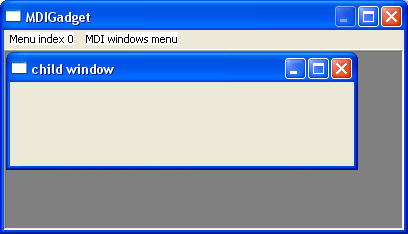

MDIGadget()
语法
Result = MDIGadget(#Gadget, x, y, Width, Height, SubMenu, MenuItem [, Flags])概要
Creates a client area, in which child windows can be displayed. These child windows are fully movable and sizable by the user in this area.
参数
#Gadget A number to identify the new gadget. #PB_Any can be used to auto-generate this number. x, y, Width, Height The position and dimensions of the new gadget. SubMenu The menu index to which the MDI window items should be added.
An MDIGadget() is always connected to a window Menu (see CreateMenu()). Therefore a MDIGadget() can only be put on a window that has a menu attached to it. The gadget will give the user the opportunity to select the child windows through one of the windows submenus. In the 'SubMenu' parameter, you have to specify the submenu index (created with MenuTitle()) where these items will be attached to (the first submenu has the index 0). The Gadget will add a separator at the end of this menu, and then add one item for each currently displayed child window.MenuItem The first menu item index to use for MDI windows.
The gadget will require a set of Menu item identifiers (see the 'MenuID' parameter of MenuItem()) to add these menuitems. In the 'MenuItem' parameter of MDIGadget() you have to specify the lowest number that the gadget can use for that purpose. It will use numbers above that, when new child windows are added, so you need to reserve at least as much numbers as you plan to add items. It is recommended to use a number above all menu identifiers of your program, to make sure there is never a collision.Flags (optional) Flags to modify the gadget behavior. It can be a combination of the following values: #PB_MDI_AutoSize : The gadget will automatically resize itself to fit the parent window. If you have no other gadgets on the window, this is a helpful option. #PB_MDI_BorderLess : There will be no border drawn around the client area. #PB_MDI_NoScrollBars : When the user drags a childwindow outside of the displayed area, there will be no scrollbars.
返回值
Returns nonzero on success and zero on failure. If #PB_Any was used as the #Gadget parameter then the return-value is the auto-generated gadget number on success.
Remarks
Because of the connection with the window menu, there can only be one MDIGadget() on a window, however you can put another one in a second window if you wish. You can only put this gadget directly on a window, you can NOT put it inside a ContainerGadget(), SplitterGadget() or PanelGadget().
As the whole point of this gadget is to dynamically display data, it is recommended to use the #PB_Any feature to populate a child window with gadgets.
When using AddGadgetItem() with this gadget, there is actually a new PB window created. All the functions of the Window library can be used with this new window (except StickyWindow()). Of course the number chosen for the new window may not overlap with another open window, otherwise the other window will be closed. The MDI Gadget does not return any events. Events concerning the childwindows will be received as normal window events (#PB_Event_SizeWindow, #PB_Event_CloseWindow, ...) instead.
A 'mini help' can be added to this gadget using GadgetToolTip().
The following functions can be used to manage the gadget contents:
- CountGadgetItems() : Return the number of child windows.
- AddGadgetItem() : Add a new child window to the gadget.
- ClearGadgetItems() : Close all child windows.
- GetGadgetState() : Get the currently focused child window.
- SetGadgetState() : Set the currently focused window, or arrange the child windows. (see GetGadgetState() for more info.)
- SetGadgetAttribute(): With the following attributes:#PB_MDI_Image : Set a background image. An ImageID value must be passed as value. (see ImageID()) #PB_MDI_TileImage: Set the tile mode. 0 draws the image just once in the top/left corner, 1 repeats the image to fill the whole areaThis gadget supports the SetGadgetColor() and GetGadgetColor functions with the #PB_Gadget_BackColor type to change the background color of the MDI area.
示例
#Main = 0 #MDIChild = 1 If OpenWindow(#Main, 0, 0, 400, 300, "MDIGadget", #PB_Window_SystemMenu | #PB_Window_ScreenCentered | #PB_Window_SizeGadget | #PB_Window_MaximizeGadget) If CreateMenu(#Main, WindowID(#Main)) MenuTitle("Menu index 0") MenuTitle("MDI windows menu") MenuItem(0, "self created item") MenuItem(1, "self created item") MDIGadget(0, 0, 0, 0, 0, 1, 2, #PB_MDI_AutoSize) AddGadgetItem(0, #MDIChild, "child window") ; add gadgets here... UseGadgetList(WindowID(#Main)) ; go back to the main window gadgetlist EndIf Repeat : Until WaitWindowEvent()=#PB_Event_CloseWindow EndIf
参阅
AddGadgetItem(), CloseWindow(), CountGadgetItems(), ClearGadgetItems(), GetGadgetState(), SetGadgetState(), GetGadgetAttribute(), SetGadgetAttribute(), GetGadgetColor(), SetGadgetColor(), Window library
已支持操作系统
Windows